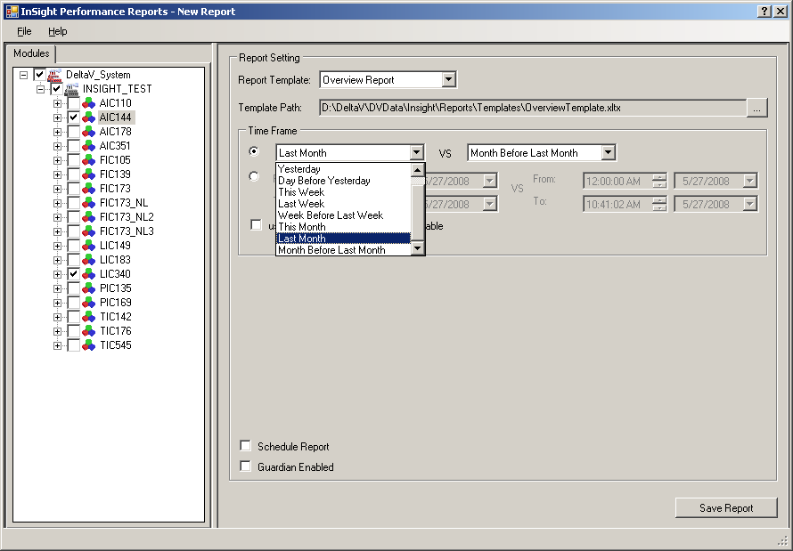
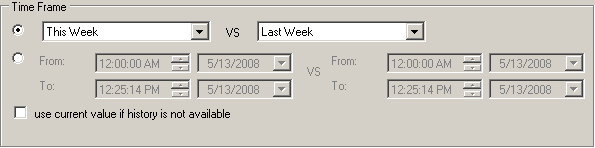
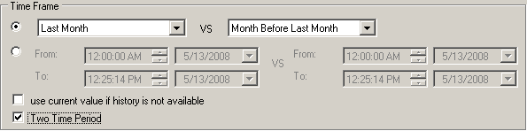
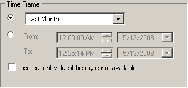

InSight Performance Reports
The InSight Performance Reports application is used to capture historical control data in .xml files and to generate reports in .pdf or .xlsx, the Excel file format. Three standard report templates are provided with the application: overview report, area performance report, and detail control loop report. In addition, users can create their own customized report templates. All report types can be enabled for use with DeltaV Guardian. Reports, including Guardian-enabled reports, can be generated on-demand or scheduled to generate automatically on a periodic basis.
Prerequisites
- Install Excel.
- Excel must be installed on the same computers as the Microsoft Save as PDF or XPS add-in.
- Run setup.exe (found in the DV_Extras\DeltaVReporter folder on the DeltaV installation disk #1) on the workstation. (ProfessionalPLUS or Operator or Application station.
- Refresh the DeltaV Continuous Historian Add-in in Excel. This Excel add-in must be refreshed or initialized on each workstation where InSight Performance Reports are generated. Due to the use of the Excel Automation add-in, the user generating InSight Performance Reports must have a user identity that is initialized in the Registry for Excel COM to function properly. Visit the Microsoft Help and Support website and navigate to the Considerations for server-side Automation of Office page for information.
- Add required parameters to history collection.
- Assign an InSight system license to the ProfessionalPLUS workstation. Refer to the DeltaV Explorer online help for information on loading license files or contact your Emerson representative for information on obtaining an InSight system license.
To view a PDF version of a report, Adobe Reader must be installed. This can be downloaded from the Adobe website. Be sure that the downloaded version of the Adobe Reader is compatible with the operating system that is used.
Adding Required History Parameters
The following parameters must be in history in order to generate standard performance reports:
OUT, OUT_D - Out
PV, PV_D - Process Value
SP, SP_D - Set Point
STDEV - Standard Deviation
VAR_IDX - Variability Index
ADP_TUN_IDX - Tuning Index
ADP_OSC_IDX - Oscillation Index
STATUS_INDEX - %Incorrect Mode, %Limited Control, %Uncertain Input, %High Standard Deviation, %Tuning (%Tuning>20, %Tuning >50,%Tuning > User Limit), Oscillation, %High Valve Deadband, %High Resolution, %Device Alerts
The required history parameters are not available for all function blocks. The following table shows which function blocks support the required history parameters.
| Required History Parameters | Function Blocks |
|
STATUS_INDEX, STDEV |
All blocks |
|
VAR_IDX |
PID, FFPID, FLC, MPC, MPCPRO, RTO, MPCPlus |
|
OUT, PV, SP |
PID, FFPID, FLC, AO, FFAO |
|
OUT, PV |
AI, FFAI, PIN, FFPIN |
|
OUT |
RTO |
|
OUT_D, PV_D |
DI, FFDI |
|
OUT_D, PV_D, SP_D |
DO, DC, FFDO |
|
ADP_TUN_IDX, ADP_OSC_IDX |
PID, FFPID with learning enabled |
You can determine if history collection is enabled for these parameters by selecting the workstation's Continuous Historian in DeltaV Explorer and selecting History Collection from the context menu. If history collection is not enabled for these parameters, you can use the Easy InSight History Collection command in combination with the History Collection command on a block-by-block basis. The Easy InSight History Command adds the control performance indices (Standard Deviation, Variability Index, Tuning Index, and Oscillation Index) to the Continuous Historian's history collection for the selected block. The History Collection commands do not overwrite existing parameters in history. For large configurations with many function blocks, it is highly recommended that you use the InSight Performance Reports application to export a file with the required history parameters, import the file with DeltaV Explorer, and download the Continuous Historian.
History Collection Commands
To use the Easy InSight History Collection command
Select a block in the DeltaV Explorer and select Easy InSight History Collection on the context menu.
To use the History Collection command
Exporting and Importing a History File
For large configurations with many function blocks, the most efficient way to ensure that all history parameters are available is to export and import a history file with the required parameters. If you decide to export and import a history file, be careful that you do not overwrite parameters that are already in history collection. For example, suppose that you have PV and OUT parameters in history collection. If you export and then import a history file, it is possible that these existing parameters will be overwritten. To avoid overwriting parameters already in history deselect, either individually or by parameter type, the parameters that you want to exclude from the export.
- From the InSight Performance Reports application, select , and then select the modules and blocks that you want to add to history collection. Deselect any that you do not want to add to history. By default, historical data collection is saved in the DVDATA\BulkEdit folder.
- Open DeltaV Explorer, and then select . The Format source dialog opens.
- Click the Browse button, open the formatted file (the default filename is HistoryDataPoint.fmt), and click Next. The Import data source dialog opens.
- Click the Browse button, select the text file created with the Export History Collection command (the default filename is InSightReportHistoryDataPoint.txt), and then click Next.
- Verify the import results and click the Import button.
- Download the Continuous Historian to add the required parameters to history.
Using the InSight Performance Reports Application
Before using the InSight Performance Reports application, ensure that all prerequisites are complete and that there is sufficient history data collected for reporting.
The InSight Performance Reports application can be opened from either InSight Tune or Inspect. Open InSight Inspect or Tune, apply filters if required, and select the items (modules, blocks, areas) for which you want to generate reports from the hierarchy in the left pane.
Select from InSight Tune or Inspect to open InSight Performance Reports.

When the application opens, notice that whatever was selected and filtered in the Tune or Inspect hierarchy is selected and filtered in the Performance Reports hierarchy. For example, if an area is selected in the Tune or Inspect hierarchy with a priority filter of 1-3, the Performance Reports hierarchy will open with the area selected and all modules and blocks with a priority of 1-3 selected. If only one block is selected in Tune or InSight, Performance Reports will open with that block selected. If reporting is disabled for a module or block in InSight, the item appears grayed in the Performance Reports hierarchy. The Performance Reports application can be opened from any tab in Inspect or Tune.
Actual Reports and Report Definitions
Generating a report generates the actual report itself and a report definition. A report definition is an .xml version of the report that can be reopened from the InSight Performance Reports application with the command to generate another report. In addition, some report definitions contain extra performance data that is not exposed in the actual report that can be included in a custom report. The actual report is the report definition formatted according to a standard or custom template and saved as an Excel file (.xlsx), a .pdf file, or both Excel and .pdf files.Report Types
There are three standard report types or templates available with the InSight Performance Reports application: overview, area performance, and detail control loop reports.
Overview Reports
Overview reports provide a summary of control performance indicators for selected areas or for the entire control system. These reports compare two time periods. Overview reports contain the:
- Number of visible loops selected for the entire control system.
- Average Utilization (plus % change). Computed as 100 - sum(incorrect mode values) /number of visible loops.
- Reporting time period.
- Loop names.
- Area name.
- Loop descriptions.
- Percent abnormal time control conditions and asset alerts (plus % change). Includes: Standard deviation, Priority, % Incorrect Mode, % Limited Control, % High Standard Deviation, and % High Variability.
Area Performance Reports
Area performance reports provide performance information for all control loops within a selected area or unit for a specified period of time. Area performance reports include the:
% time for all abnormal control conditions including:
- Incorrect Mode
- Limited Control
- Uncertain Input
- Large Variability
- High Standard Deviation
- Improved Tuning
- Oscillation
- Device Alerts
Average values for all control performance indices including:
- Standard deviation
- Performance Index
- Tuning Index
- Oscillation Index
Detail Control Loop Reports
Detail control loop reports are intended for expert users or consultants. These reports are generated for only one control loop and contain all of the % abnormal control condition parameters and control performance indices reported in the area performance report plus:
- Process model parameters (if Process Learning is enabled)
- Histograms
- Graphical trends for key performance variables over a specified time period. The default trends include SP, PV and Out vs. time and PV vs. Out (x-y plot).
- DeltaV Reporter functions
Custom Reports
There are two ways to create custom reports:
To edit a default template file:
- Open Excel, browse to the default template directory, DVData\InSight\Reports\Templates, and then open one of the default templates.xltx.
- Modify the default template, provide a filename and location, and save it as an Excel template (.xltx) in DVData\InSight\Reports\Templates.
As an example, suppose that you wanted to modify a default template by inserting a column that shows historical data on the production rates in your plant. To add this data:
- Follow steps 1 and 2 above and create a custom report template with a unique filename.
- Select the Add-Ins tab in Excel, and then select to open the Configure Calculated Data Function dialog.
- Use this dialog to add the required data to the template.
To create a template from a saved report definition file:
- Open Excel, browse to the report definitions directory, DVData\InSight\Reports\Definitions, and then open a definition file (.xml).
- Select Use the XML Source task pane in the Open XML dialog, and then click OK. The schema for the report definition is displayed in the XML Source pane.
- Create the mapping, formatting, and save the file as an Excel template (.xltx). Refer to the Excel online help for information on working with .xml schemas.
Report Time Periods
The data collection time periods are defined by absolute or relative time. Absolute time is expressed as a time duration in hours:minutes:seconds AM or PM and month/day/year. An example of an absolute time period is, from 12:00:00 AM 5/13/1997 to 12:25:15 PM 5/13/97. Relative time is relative to the current date and expressed as:
- Last month
- Month before last month
- Last week: Sunday to Sunday
- Week before last week: Sunday to Saturday
- Yesterday: 12 AM yesterday to 12 AM today
- Day before yesterday: 12 AM day before yesterday to 12 AM yesterday
- Today: 12 AM today to the current hour and minute
- This week: Sunday to the current day of the week
- This month: Day 1 of the current month to the current day
The time frames vary depending upon the type of report template selected. Overview reports provide a comparison between two time frames in either relative or absolute time. Relative time is shown in the following image.

Custom reports provide either a two time period comparison in relative or absolute time or one time period in relative or absolute time. The Two Time Period option on the custom report setting lets you choose between one or two time periods. The following image shows the Two Time Period option selected for a custom report.

The other report types: area performance and detailed control loop provide one time period in either relative or absolute time.

Generating Reports
To generate a report:
- Be sure that the correct items are selected in the InSight Performance Reports hierarchy. If the selected items are not correct for the report you want to generate, modify the hierarchy by deselecting and selecting items.
- Select the report type from the Report Template list. For customized reports, select Customized Reports from the list and open a previously-created custom template.
- Set the time period for data collection.
- Select any applicable options for the report (Use current value if history is not available, Schedule Report, Guardian Enabled).
- Click Save Report and specify the report file type (.xlsx, .pdf, or both .xlsx and .pdf) and location. The default location for reports is DVData\InSight\Reports. Remember that for every saved report, a report definition is saved in .xml format in DVData\InSight\Reports\Definitions.
Guardian Enabled Reports
The DeltaV Guardian application is used by Emerson SureService support to enable and disable monitoring of the DeltaV system when it is enrolled in the Guardian Support Plan. The Guardian Monitor or the Automated Registration Utility must be installed and the system must be enrolled in the Guardian Support Plan to use this option. When these Guardian-based utilities are running, selecting the Guardian Enabled option for report generation saves the report in the DVData\InSight\GuardianReports folder.
Contact your Emerson representative for information on DeltaV Guardian.
Scheduling Reports
Generation of InSight performance reports, including Guardian-enabled reports, can be scheduled on a periodic or one-time basis. When an absolute time frame (from: date and time; to: date and time) is selected for data collection, report generation can be scheduled once at a specified start time and start date. When a relative time frame is selected for data collection, report generation can be scheduled:
Once at a start time and start date.
Daily at a start time and start date with options to run the report every day, weekdays only (Monday through Friday), or every certain number of days.
Weekly at a start time for selected days of the week with an option to run the report every certain number of weeks.
Monthly at a start time on a specific day of a selected month or months.
When report generation is scheduled on a periodic basis, options are provided to specify a report limit and to overwrite the oldest report when the limit has been reached. If the option to overwrite the oldest report is disabled, report generation is stopped when the limit is reached.
If the Show Scheduled Task option is selected, the Windows Scheduled Tasks dialog opens showing the list of tasks scheduled on the computer.
Using Current Values in Place of History Data
The Use current value if history is not available option is not selected by default. When this option is not selected, generated reports will contain blank values for parameters with no history data. If this option is selected, generated reports contain the current values for parameters with no history data. History can be unavailable if a connection cannot be made to the historical data server or parameters are not configured in history.
Opening Report Definitions
Saved report definitions can be opened in the InSight Performance Reports application to create another report definition or to regenerate the actual report from the saved definition. Click to open a report definition. When a report definition is opened, the InSight Performance Reports hierarchy is populated with the report definition's values and the report definition's name appears in the application's title. Any of the items in the Report Setting pane can be changed and items in the hierarchy can be deselected and selected to create a new report definition.
When you save the report after editing the report definition, you can retain the report name and overwrite the existing actual report (.pdf or .xlsx) and definition (.xml) or rename the actual report to create a new report and definition.
System Configuration Settings for Scheduled Reports
The user scheduling InSight Performance Reports must have access to the Scheduled Tasks folder. The default location for this folder is C:\Windows\Tasks.
By default, Excel as a COM object can only be activated by the Administrator, System, or by Interactive accounts. Therefore, it is possible that a scheduled report will fail to run correctly under the following conditions:
- You configure a scheduled report using a different user account than the one currently logged on.
- You configure a scheduled report to run unattended at a time when the user specified in the Run as field of the scheduled report's Properties dialog is not logged on.
To prevent the possibility of a scheduled report failing to run, complete the following steps to edit the DCOM configuration settings for the Microsoft Excel Application object:
- Depending on the operating system, either use Control Panel to open Component Services in Administrative Tools; or, type comexp.msc or dcomcnfg.exe in the Run command window.Note: If the 32-bit version of Microsoft Office is installed on a 64-bit machine, the 32-bit version of the DCOM Configuration Manager must be used to view the Microsoft Excel application. Run either of these commands: mmc -32 or comexp.msc /32.
- In the console tree of the Component Services administrative tool, select .
- In the list COM+ server applications, right-click Microsoft Excel Application, and then click Properties on the shortcut menu.
- On the Security tab of the Microsoft Excel Application Properties dialog, select Customize in the Launch and Activation Permissions group, and then click Edit.
- In the Launch Permissions dialog, add the InSight Performance Reports user who needs to configure scheduled reports, and then enable the Local Launch and Local Activation permissions for this user.
- Return to the Security tab of the Microsoft Excel Application Properties dialog, select Customize in the Access Permissions group, and then click Edit.
- In the Access Permissions dialog, add the InSight Performance Reports user who needs to configure scheduled reports, and then enable the Local Access permissions for this user.
- Return to the Microsoft Excel Application Properties dialog, select the Identity tab, and then enable the following option: The launching user.
The InSight Performance Reports user scheduling reports must also be included in the list of users with the Log on as a batch job policy. Follow these steps to check that this user is included in the list:
- Click to open the Local Security Settings dialog.
- Navigate to Local Policies/User Rights Assignment in the hierarchy in the left pane.
- Double-click Log on as a batch job under Policy in the right pane.
- Ensure that the InSight Performance Reports user scheduling the report is included in the list of users who have this privilege.
Refreshing the DeltaV Continuous Historian Add-in
Follow these steps to refresh the DeltaV Continuous Historian Add-in on each workstation where InSight Performance Reports are generated.
- Open the Excel Options dialog.
- Click Add-Ins in the left pane, and then click the Go button at the bottom of the page to open the Add-Ins dialog. You will notice that DeltaV Continuous Historian Excel Add-In is already selected. This is expected. Continue with the next steps to refresh or initialize this add-in for the current user.
- Click the Automation button on the Add-Ins dialog to open the Automation Servers dialog.
- Find DeltaV Continuous Historian Excel Add-In in the list, select it, and then click OK in the Automation Servers dialog.
- Click Yes at the prompt to replace the existing add-in.
- Click OK on the Add-Ins dialog and wait for the changes to take effect.